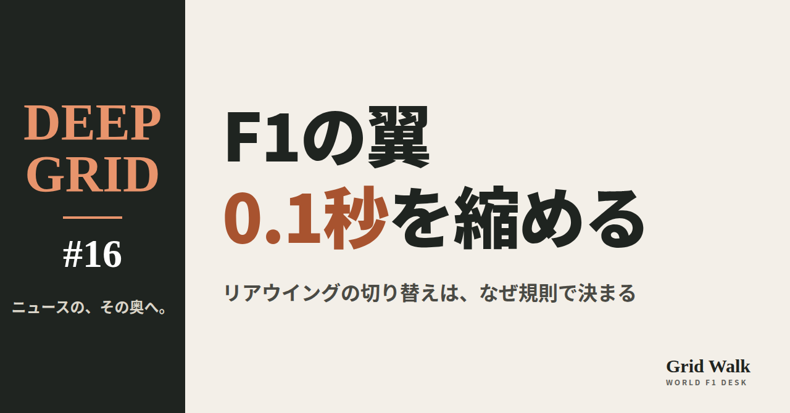

<meta charset="utf-8"><title>翼の0.1秒 note貼り付け</title>
<style>
/* one column of numbered paste steps; text steps vs image steps differ by marker */
:root{--bg:#F5F4F0;--card:#FFFFFF;--ink:#1D2321;--mute:#5F665F;--line:#DCDAD2;--btn:#1F5FBF;--btnok:#2E8B4F;--img:#E9F3EC;--imgink:#22663B;--sans:'IBM Plex Sans JP','Hiragino Sans','Noto Sans JP',sans-serif}
@media (prefers-color-scheme:dark){:root:not([data-theme="light"]){--bg:#171A19;--card:#202423;--ink:#ECEDE8;--mute:#A3AAA2;--line:#343937;--btn:#4D8BE6;--btnok:#3FA866;--img:#1E2C23;--imgink:#8FD3A6;color-scheme:dark}}
:root[data-theme="dark"]{--bg:#171A19;--card:#202423;--ink:#ECEDE8;--mute:#A3AAA2;--line:#343937;--btn:#4D8BE6;--btnok:#3FA866;--img:#1E2C23;--imgink:#8FD3A6;color-scheme:dark}
body{background:var(--bg);color:var(--ink);font-family:var(--sans);font-size:15px;line-height:1.75;padding:20px 16px 60px}
main{max-width:680px;margin:0 auto;display:grid;gap:28px}
header h1{font-size:22px;margin:0 0 6px;text-wrap:balance}
header p{margin:0;color:var(--mute);font-size:14px}
nav{display:flex;gap:8px;flex-wrap:wrap;margin-top:12px}
nav a{border:1px solid var(--line);border-radius:999px;padding:4px 14px;color:var(--ink);text-decoration:none;font-size:14px;background:var(--card)}
.part h2{font-size:18px;line-height:1.5;margin:0 0 12px;text-wrap:balance;display:flex;gap:10px;align-items:baseline;flex-wrap:wrap}
.tag{font-size:13px;background:var(--ink);color:var(--bg);border-radius:6px;padding:1px 9px}
.steps{list-style:none;margin:0;padding:0;display:grid;gap:12px}
.st{background:var(--card);border:1px solid var(--line);border-radius:12px;padding:12px;min-width:0}
.hd{display:flex;align-items:center;gap:8px;margin-bottom:8px}
.no{width:26px;height:26px;border-radius:50%;background:var(--btn);color:#fff;display:inline-flex;align-items:center;justify-content:center;font-size:13px;font-weight:700;flex:0 0 26px}
.im .no{background:var(--btnok)}
.hd em{font-style:normal;font-size:12px;background:var(--img);color:var(--imgink);border-radius:6px;padding:0 8px}
.bx{font-size:13.5px;line-height:1.7;border:1px solid var(--line);border-radius:8px;padding:8px 10px;max-height:110px;overflow:auto;overflow-wrap:anywhere}
.bx.tall{max-height:150px}.bx p{margin:0 0 6px}.bx h2{font-size:14px;margin:8px 0 4px}.bx a{color:var(--btn)}
.st img{display:block;width:100%;max-width:100%;border:1px solid var(--line);border-radius:8px}
.sub{font-size:12.5px;color:var(--mute);margin:6px 0 0}
.cp{width:100%;margin-top:8px;padding:12px;border:0;border-radius:10px;background:var(--btn);color:#fff;font:600 15px var(--sans);cursor:pointer}
.cp.ok{background:var(--btnok)}.cp.dl{background:var(--btnok)}.cp:focus-visible{outline:3px solid var(--ink);outline-offset:2px}
.xh{font-size:15px;margin:20px 0 10px}
.fb{font-size:13px;line-height:1.7;margin:8px 0 0;padding:8px 10px;border-radius:8px;background:var(--img);color:var(--imgink)}
.opts{display:grid;grid-template-columns:repeat(auto-fill,minmax(240px,1fr));gap:10px}
.opt{min-width:0}.opt img{display:block;width:100%;border:1px solid var(--line);border-radius:8px}
.ol{display:flex;align-items:center;gap:8px;margin-top:6px}.ol b{font-size:13px;flex:0 0 auto}.ol .on{font-size:12.5px;color:var(--mute);flex:1;min-width:0}.ol .cp{width:auto;flex:0 0 auto;padding:9px 14px}.ol .cp{margin:0;padding:9px}
.toast{font-size:13px;color:var(--mute);margin-top:6px}
</style>
<main><header><h1>翼の0.1秒 note貼り付け</h1><p>上から順に進めてください。青い番号は文章、緑の番号は画像です。</p></header><section class="part"><h2><span class="tag">DEEP GRID</span>F1のリアウイング、切り替えの「0.1秒」をなぜ規則で縮めるのか</h2><ol class="steps"><li class="st im"><div class="hd"><span class="no">1</span><b>見出し画像</b><em>画像</em></div><div class="opts"><div class="opt"><div class="ol"><b>W1</b><span class="on">紙の色「0.1秒を縮める」（サイトのカード画像と同じ）</span><button class="cp dl" data-img="img/eye-W1.png" data-name="翼の0.1秒_見出し画像_W1.png">ダウンロード</button></div></div></div></li>
<li class="st"><div class="hd"><span class="no">2</span><b>タイトル</b></div><div class="bx" id="t0">F1のリアウイング、切り替えの「0.1秒」をなぜ規則で縮めるのか【DEEP GRID #16】</div><button class="cp" data-plain="t0">タイトルをコピー</button></li>
<li class="st"><div class="hd"><span class="no">3</span><b>本文</b></div><div class="bx tall" id="r0"><p>FIAは2027年、動くリアウイングの切り替えにかけてよい時間を0.4秒から0.3秒に縮める。いちばん影響を受けそうなのは、フラップを大きく回転させる「マカレナウイング」だ。たった0.1秒を、なぜわざわざ規則で決めるのか。2026年の翼の仕組み、フェルスタッペンの2度の事故、アロンソの「閉じたままの翼」から、安全と速さのせめぎ合いをほどく。</p><p>全文と表は F1 Grid Walk で → <a href="https://f1gridwalk.github.io/deep/wing-300ms/?utm_source=note&amp;utm_campaign=wing-300ms">https://f1gridwalk.github.io/deep/wing-300ms/?utm_source=note&amp;utm_campaign=wing-300ms</a></p><h2>先に結論</h2><p>① 2026年のF1は、前後の翼が走りながら動く（アクティブエアロ）。決められた直線ではボタンで翼を寝かせて空気抵抗を減らし（ストレートモード）、ブレーキを踏むと自動で元の形（コーナーモード）に戻る。いまの規則では、この切り替えを0.4秒以内に終えなければならない。</p><p>② FIAは2027年、この上限を0.3秒に縮める（英The Race、F1-Gate.com）。とくに関わるのは、フラップを大きく回転させる「マカレナウイング」だ。The Raceによると、フェラーリは270度、レッドブルとマクラーレンは約150〜160度回る。</p><p>③ 時間を決めるのは、安全のためだ。ブレーキの瞬間に翼が戻りきらないと、車の後ろを押さえる力が足りないまま曲がり始めることになる。2026年、フェルスタッペンはオーストリアGPとイギリスGPで続けて、リアウイングの問題が関わるコースアウトとクラッシュを起こした。</p><p>④ 「壊れたらコーナーモードに戻る」という決まりは、2026年の規則にもすでにある。伊Formula1.itによると、2027年の案では、前の翼のフラップが戻れなくなる故障まで考えて、危険を小さくする設計も求める。オランダGPのスプリント予選では、アロンソのリアウイングが開かず（ストレートモードが働かず）、アロンソは直線で遅れて最下位に終わった（GPFans、Crash.net）。翼が閉じた側で止まる故障は、遅くなっても、ダウンフォースは失わない。</p><p>⑤ The Raceによると、回転式の3チームとも、大きな作り直しなしに0.3秒を守れる見込みだという。一方で、回転の大きいフェラーリがいちばん難しいとも伝えられる。回転式とメルセデス型のどちらがよいかは、まだはっきりしない。The Raceのアンダーソンは9月、成績から見ればメルセデス型に分があると書いた。</p><p><strong>あなたは、0.1秒のために翼の作りまで見直させる規則を、やりすぎだと思いますか？ それとも安全のために当然だと思いますか？</strong></p><h2>続きは F1 Grid Walk で</h2><p>ここから先の「2026年、翼は「動く部品」になった」「なぜ「時間」に上限があるのか」「回る翼と、開く翼」「壊れたら、どちらに倒れるか」「0.3秒で、何が変わるのか」は、サイトで読めます。2026年の技術規則の条文、回転角の報道ごとの違い、切り替えのあいだに車が進む距離、動く翼の歴史などの表も載せています。</p><p><strong>DEEP GRID #16「F1のリアウイング、切り替えの「0.1秒」をなぜ規則で縮めるのか」</strong></p><p><a href="https://f1gridwalk.github.io/deep/wing-300ms/">https://f1gridwalk.github.io/deep/wing-300ms/</a></p><p>━━━━━━━━━━</p><p><strong>F1 Grid Walk では、世界のF1ニュースを毎日日本語でまとめています。</strong></p><p>海外の記事の要約を、毎日載せています。</p><p>ほかの海外記事も読みたい方は、F1 Grid Walkへ。</p><p><a href="https://f1gridwalk.github.io/">https://f1gridwalk.github.io/</a></p><p>━━━━━━━━━━</p><p><a href="https://www.the-race.com/formula-1/fia-clampdown-macarena-f1-rear-wings-for-2027/">出典：The Race</a></p><p><a href="https://www.formula1.it/news/32975/1/regolamento-2027-le-ali-tipo-macarena-saranno-penalizzate">出典：Formula1.it</a></p><p><a href="https://f1-gate.com/fia/227852.html">出典：F1-Gate.com</a></p><p><a href="https://it.motorsport.com/f1/news/f1-la-fia-vuole-ridurre-la-transizione-delle-ali-reverse-nel-2027-ferrari-cambiera-la-macarena/10863709/">出典：Motorsport.com（イタリア版）</a></p><p><a href="https://www.motor.es/formula-1/fia-modifica-reglamento-f1-temor-alerones-macarena-2026116922.html">出典：Motor.es</a></p><p><a href="https://scuderiafans.com/fia-to-tighten-2027-active-aero-rules-as-ferrari-macarena-wing-faces-new-limit/">出典：ScuderiaFans</a></p><p><a href="https://api.fia.com/system/files/documents/fia_2026_f1_regulations_-_section_c_technical_-_iss_17_-_2026-04-28.pdf">出典：FIA</a></p><p><a href="https://www.fia.com/regulation/category/110">出典：FIA</a></p><p><a href="https://the-race.com/formula-1/ferrari-red-bull-fia-safety-talks-macarena-f1-rear-wings/">出典：The Race</a></p><p><a href="https://f1-gate.com/fia/f1_95718.html">出典：F1-Gate.com</a></p><p><a href="https://www.thestar.com.my/sport/motorsport/2026/07/17/motor-racing-verstappen-reverts-to-old-rear-wing-after-successive-crashes">出典：The Star（ロイター）</a></p><p><a href="https://www.gpfans.com/en/f1-news/1089119/fia-f1-macarena-wing-ban-decision-red-bull-crashes-max-verstappen/">出典：GPFans</a></p><p><a href="https://the-race.com/formula-1/rear-wings-major-2026-development-battle-explained/">出典：The Race</a></p><p><a href="https://www.the-race.com/formula-1/how-each-active-f1-rear-wing-concept-works-gary-anderson-explains/">出典：The Race</a></p><p><a href="https://www.gpfans.com/en/f1-news/1089297/f1-fernando-alonso-dutch-grand-prix-misery-sprint-qualifying-straight-line-mode-not-working/">出典：GPFans</a></p><p><a href="https://www.crash.net/f1/news/1102712/1/fernando-alonso-gets-zandvoort-f1-sprint-penalty-aston-confirms-key-car-fix">出典：Crash.net</a></p><p><a href="https://www.the-race.com/formula-1/what-is-drs-drag-reduction-system-explained/">出典：The Race</a></p><p><a href="https://www.motorsport.com/f1/news/banned-technical-analysis-f-duct/4782715/">出典：Motorsport.com</a></p><p><a href="https://www.the-race.com/formula-1/when-f1-last-had-adjustable-front-wings-and-why-it-didnt-work/">出典：The Race</a></p></div><button class="cp" data-rich="r0">本文をコピー</button></li>
<li class="st"><div class="hd"><span class="no">4</span><b>ハッシュタグ</b></div><div class="bx" id="g">#F1 #F1jp #DEEPGRID #リアウイング #アクティブエアロ #F1の技術 #F1解説 #フォーミュラ1 #モータースポーツ #F1ニュース #海外F1 #F1好きと繋がりたい #F1GridWalk</div><button class="cp" data-plain="g">ハッシュタグをコピー</button></li>
</ol><h3 class="xh">X に投稿（note を公開したあと）</h3><ol class="steps"><li class="st"><div class="hd"><b>① note からシェアするときに添える文</b></div><div class="bx" id="x0">F1の動くリアウイング、2027年は切り替えの上限が0.4秒から0.3秒に。たった0.1秒を、なぜ規則で決めるのか。マカレナウイングの回転角、フェルスタッペンの2度の事故、アロンソの「開かない翼」から、noteにまとめました #F1jp #DEEPGRID</div><button class="cp" data-plain="x0">コピー</button></li>
<li class="st"><div class="hd"><b>② ①への返信</b></div><div class="bx" id="x1">ほかの海外記事も読みたい方は、F1 Grid Walkへ。
https://f1gridwalk.github.io/deep/wing-300ms/?utm_source=x&amp;utm_campaign=wing-300ms</div><button class="cp" data-plain="x1">コピー</button></li>
<li class="st"><div class="hd"><b>③ ②への返信</b></div><div class="bx" id="x2">毎日の海外F1ニュースは、日本語でこちらにまとめています。
https://f1gridwalk.github.io/</div><button class="cp" data-plain="x2">コピー</button></li>
</ol></section></main><script>
function done(b,msg){const t=b.dataset.t||b.textContent;b.dataset.t=t;b.classList.add('ok');b.textContent=msg||'コピーしました';setTimeout(()=>{b.classList.remove('ok');b.textContent=t},2000)}
function selectEl(el){const r=document.createRange();r.selectNodeContents(el);const s=getSelection();s.removeAllRanges();s.addRange(r)}
async function rich(el,b){
  try{await navigator.clipboard.write([new ClipboardItem({'text/html':new Blob([el.innerHTML],{type:'text/html'}),'text/plain':new Blob([el.innerText],{type:'text/plain'})})]);done(b);return}catch(e){}
  selectEl(el);let ok=false;try{ok=document.execCommand('copy')}catch(e){}
  if(ok){getSelection().removeAllRanges();done(b)}else{done(b,'選択しました。コピーしてください')}}
async function plain(el,b){
  try{await navigator.clipboard.writeText(el.innerText);done(b);return}catch(e){}
  selectEl(el);let ok=false;try{ok=document.execCommand('copy')}catch(e){}
  if(ok){getSelection().removeAllRanges();done(b)}else{done(b,'選択しました。コピーしてください')}}
let dlns=null;(async()=>{try{dlns=await window.claude?.use?.("downloads")}catch(e){dlns=null}})();
async function img(src,b){
  b.dataset.t=b.dataset.t||b.textContent;
  if(!dlns){try{dlns=await window.claude?.use?.("downloads")}catch(e){}}
  if(!dlns){b.textContent='ダウンロードできませんでした';setTimeout(()=>{b.textContent=b.dataset.t},3500);return}
  try{const blob=await fetch(src).then(r=>r.blob());b.textContent='保存の確認を開いています…';
    await dlns.save({filename:b.dataset.name,data:blob});done(b,'ダウンロードしました')}
  catch(e){const c=e&&e.code;b.textContent=c==='declined'?'キャンセルしました':c==='rate_limited'?'少し待ってからもう一度押してください':'ダウンロードできませんでした';setTimeout(()=>{b.textContent=b.dataset.t},3500)}}
document.querySelectorAll('.cp').forEach(b=>b.addEventListener('click',()=>{
  if(b.dataset.rich)rich(document.getElementById(b.dataset.rich),b);
  else if(b.dataset.plain)plain(document.getElementById(b.dataset.plain),b);
  else img(b.dataset.img,b)}));
</script>